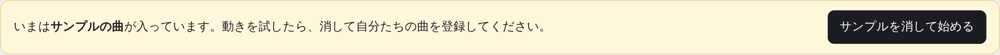
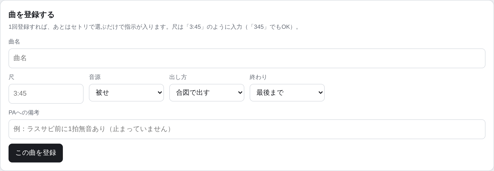
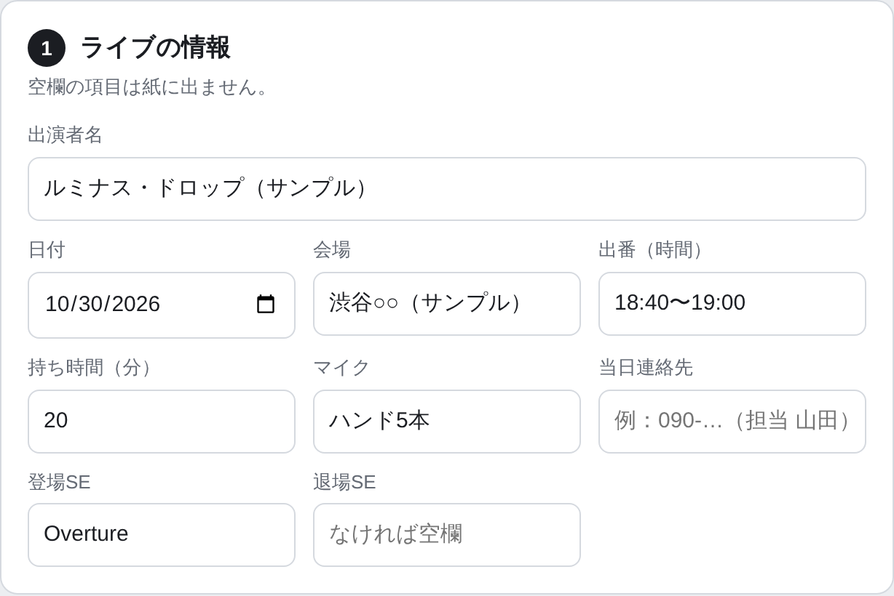
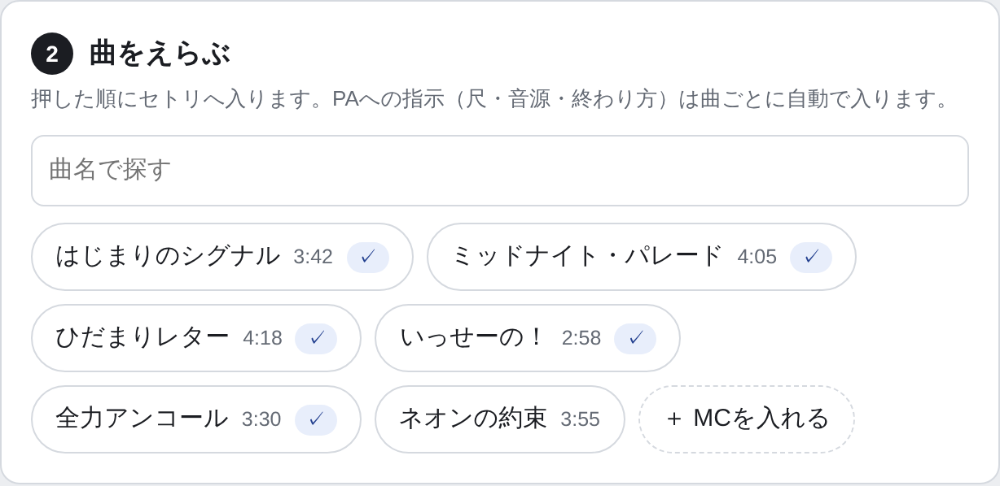
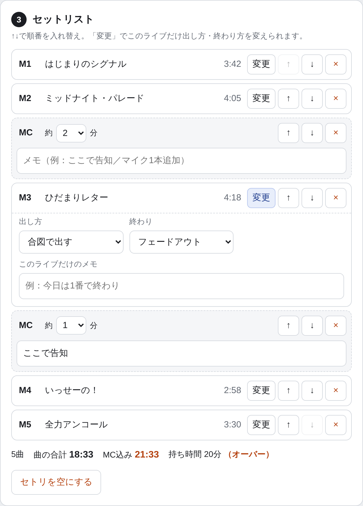
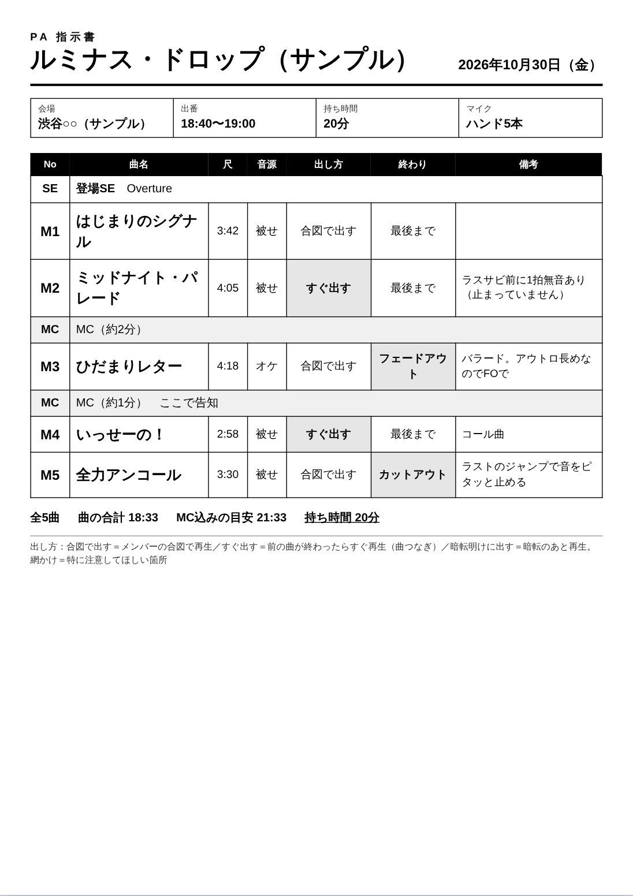
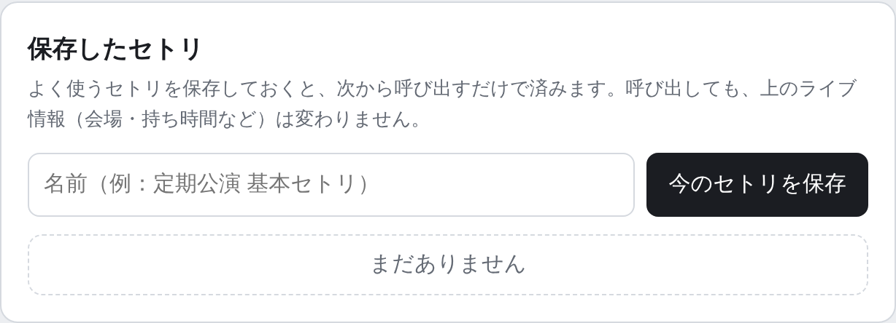

セトリを選ぶだけで、PA指示書がA4で印刷できます
曲ごとの指示（尺・音源・出し方・終わり方）は最初に1回登録すれば、あとは毎回自動で入ります。
はじめに
-
ツールを開いて、ブックマークする
Chrome か Edge で https://travis555jp.github.io/setlist/ を開き、ブックマーク（☆マーク）しておきます。次からはブックマークから開くだけです。
-
サンプルを消す
最初は練習用のサンプル曲が入っています。触って試したあと、サンプルを消して始める を押します。

-
自分たちの曲を登録する
画面上の 曲の登録 を押し、曲名・尺・音源・出し方・終わり・PAへの備考を入れて この曲を登録。全曲くり返します。

まとめて入れたいとき- 「曲名をまとめて登録」の欄に、1行に1曲ずつ貼り付けると一度に登録できます
- Excelで作りたい場合は CSVで書き出す → Excelで編集して保存 → CSVを読み込む
登録した曲は下の一覧でいつでも直せます。尺は「3:45」でも「345」でもOKです。
PA指示書を作って印刷する
-
ライブの情報を入れる
画面上の セトリを組む を押し、「1 ライブの情報」に出演者名・日付・会場・持ち時間などを入れます。空欄の項目は紙に出ません。

-
曲を押して、セトリを作る
「2 曲をえらぶ」で、歌う順番に曲名を押していきます。MCを入れたい場所では ＋ MCを入れる を押します。

-
順番を直す・このライブだけ変える
↑↓ で順番を入れ替え、× でセトリから外します（曲の登録は消えません）。
今日だけ終わり方を変えたい時などは 変更 を押します。ここで変えても、登録した曲の設定はそのままです。
持ち時間のチェック曲の合計とMC込みの目安が下に出ます。持ち時間を超えると赤字で「オーバー」と出ます。 -
右の印刷イメージを確認して、印刷する
右側に、印刷される紙がそのまま表示されます。よければ黄色の 🖨 印刷する を押します。

印刷画面での設定（ここだけ注意）- 用紙サイズ：A4
- 「詳細設定」の ヘッダーとフッター：オフ（URLや日付が紙に入らなくなります）
- PDFで保存してLINEなどで送りたい時は、送信先（プリンター）を 「PDFに保存」 にします
指示の言葉の意味
紙の網かけ（グレー）の所は、PAさんに特に気をつけてほしい箇所です。
| 欄 | 言葉 | 意味 |
|---|---|---|
| 音源 | 被せ | 歌入りの音源にあわせて歌う |
| オケ | カラオケ（歌なし）の音源 | |
| 生歌 | 音源の歌はなし。全部生で歌う | |
| 出し方 | 合図で出す | メンバーの合図（目線・手など）で再生してもらう |
| すぐ出す | 前の曲が終わったらすぐ再生（曲つなぎ）。網かけになります | |
| 暗転明けに出す | 照明が暗くなって明けたら再生 | |
| 終わり | 最後まで | 音源を最後まで流す |
| フェードアウト | だんだん音を小さくして終わる（FO）。網かけになります | |
| カットアウト | 決めた所でピタッと止める（CO）。網かけになります |
よく使うセトリを保存する
定期公演などで同じセトリを使う時は、「保存したセトリ」に名前を付けて 今のセトリを保存。次回は 呼び出す を押すだけで曲順が戻ります。

呼び出しても、会場・持ち時間などのライブ情報は今入れている内容のままです。
困ったとき
- 開いたら曲が全部なくなっていた
- データは「そのパソコンの、そのブラウザ」の中にだけ保存されています。別のパソコンや別のブラウザ（ChromeとEdgeなど）、シークレットウィンドウで開くと空になります。いつものパソコン・ブラウザで開き直してください。ブラウザの「閲覧データを削除」をすると消えてしまいます。
- 万一に備えて控えを取りたい／別のパソコンで使いたい
- 「曲の登録」の CSVで書き出す で曲リストを、控えをファイルに書き出す で保存したセトリも含めた全部を、ファイルに残せます。別のパソコンでは 控えファイルから戻す で読み込みます。曲を増やしたら控えも取り直しておくと安心です。
- 紙の上や下にURLや日付が入ってしまう
- 印刷画面の「詳細設定」で「ヘッダーとフッター」のチェックを外してください。
- 曲が多くて2枚になってしまう
- 14行を超えると自動で行が詰まります。それでも収まらない時は、印刷画面の「倍率」を90%くらいにしてください。
- 曲名のスペルを直したい
- 「曲の登録」の一覧で直接書き換えれば、セトリと印刷イメージにもすぐ反映されます。
- 入力した内容は外に送られますか？
- 送られません。データはこのパソコンの中だけにあり、ツールの置き場所（GitHub）からも見えません。